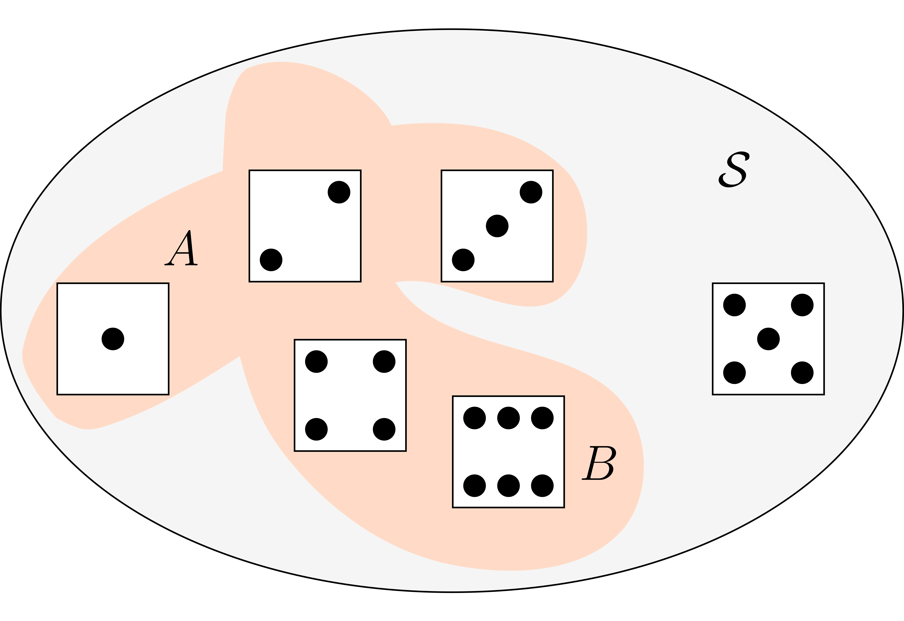
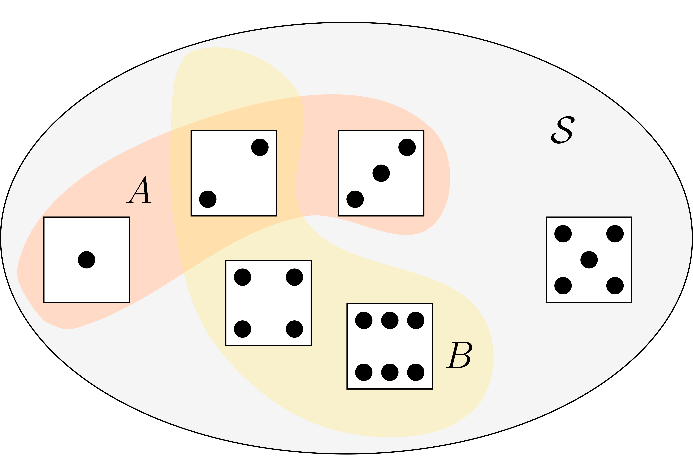
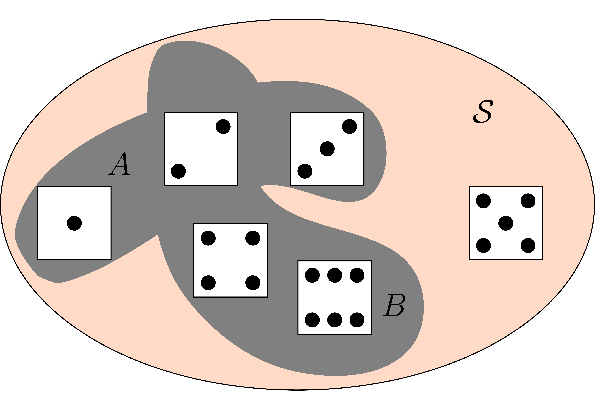
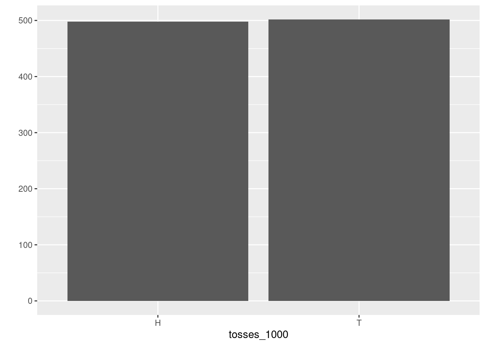
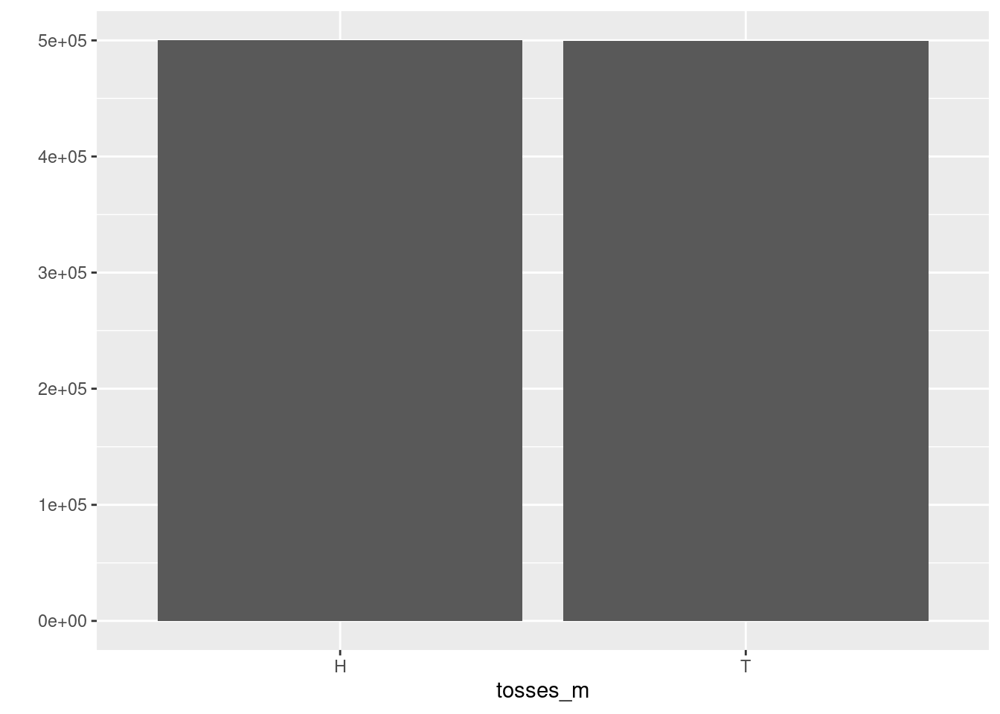

Chapter 2 Probability: Basic Definitions and Rules
Now that we have taken the first steps in probability ideas and in R, which have already taken us surprisingly far, let us now start with making the terminology a bit more precise. We will deepen the ideas we have learned so far. In particular we will discuss the notion of empirical probability in some more detail. We will also learn about a very important new idea which was often used implicitly in early studies of probability, namely the idea of independence.
In this lecture we will also encounter the first proper applications to Finance and financial data, which will also help us to learn about R’s syntax to read, manipulate and store data. This we will need as a foundation for more complex applications later in the course.
2.1 Terminology
Probability is a mathematical theory. This theory gets practical value and intuitive meaning in connection with real or conceptual experiments such as sampling individuals at random from a population or observing the movements of stock prices or the frequency of loan defaults. In the last lecture we already introduced some basic notions in the context of gambling and early probability theory.
Let us wrap up the definitions we have already discussed:
- Random Experiment
- When we use the term (random) experiment we mean a process leading to an uncertain outcome.
To make this notion precise and useful we need to agree what we mean by uncertain outcomes. Note again that we pin down the possible outcomes by agreeing on the outset what we want to consider as the possible outcomes. Take the simple example of considering whether the price of a stock is going to rise or fall at the next day. In a practical situations the outcome of a move in the stock price can be that it goes up or down but it could in principle also stay the same. Still when we think about the experiment of observing the stock price tomorrow in many applications in Finance we usually agree that up and down are the only possible outcomes of this experiment.
- Sample space
- The collection of all possible outcomes of an experiment is called the sample space.
- Basic outcome, event, simple event
- When we talk of a basic outcome we mean the possible outcome of a random experiment. An event is a subset of basic outcomes. Any event which consists of a single outcome in the sample space is called a simple event.
In the first lecture we learned about two approaches to measure probability. But the theory of probability actually does not depend on how we measure it precisely. In the theory of probability this measure is an abstract concept.
Probability is a measure of how likely an event of an experiment is. Thus when we talk about probability in a precise and meaningful sense we can only do so in relation to a given sample space or to a certain conceptual experiment.
But before we go on let me clarify what we mean when we say that in the theory, probability is an abstract measure of uncertainty which we take as given.
2.2 Probability in theory and applications of probability
Probabilities are expressed as numbers between 0 and 1. As mentioned by Feller (1968) in his famous probability textbook, these numbers are of the same nature as distances in geometry. In the theory we assume they are given to us.
From the viewpoint of probability theory, we need not assume anything about how they are measured. In this sense probabilities in the theory of probability are an abstract measure of uncertainty.
In actual applications, however, the determination of probabilities or the application of the theory to observations requires often sophisticated statistical methods. So, while the mathematical as well as the intuitive meaning of probability are clear only as we proceed with the theory we will get a better ability to see how we can apply this concept.
2.3 Basic rules of probability
We already saw that the classical notion of probability directly lead to a few simple rules. In fact in the theory of probability we require these rules to hold more generally no matter how probability is measured in actual applications.
When we talk of probabilities we mostly consider probabilities with relation to a discrete sample space. The simple sample spaces we considered in lecture 1 contain only a finite number of points, though they could get very large, as in the example of the SHA-256 hash function. Such sample spaces with a finite number of points belong to the discrete sample spaces.
There are also more complicated discrete sample spaces: Think of the random experiment of tossing a coin as often as necessary to see Heads for the first time. We can begin writing down the basic outcomes as: \(E_1=H, E_2=TH, E_3 = TTH, E_4 = TTTH, ...\). We may consider it possible that Head never appears. This event we should perhaps call \(E_0\). In this case, when the basic events can be arranged into a simple sequence. A sample space is called discrete if it contains only finitely many points, or infinitely many points which can be arranged into a simple sequence.
Not all sample spaces are discrete. Except for the technical tools required there is no essential difference between the two cases. In our discussion of probability in this lecture we consider mostly discrete sample spaces, however we will also discuss some basic non-discrete sample spaces later in the lectures. Now let us state more formally what we mean by probability.
- Probability
- Given a (discrete) sample space \({\cal S}\) the probability assigned to events in this sample space must always fulfill three rules:
- \(P({\cal S}) = 1\), where \({\cal S}\) is the sample space.
- For any event \(A \in {\cal S}\), \(0 \leq P(A) \leq 1\). The probability of an event can never be negative or larger than 1.
- The probability of the union of two events \(A\) and \(B\) is always smaller or equal to the sum of the probability of these events looked at in isolation: \(P(A \cup B) \leq P(A) + P(B)\).
Note that these three properties resulted naturally from the classic idea to make equally probable cases and count. Property 3 looks slightly different but we will shortly see that it amounts to the same thing.
In the theory of probability we use the language of sets and set theory to describe relations among event. We have used one of these relations in rule three, where we expressed the relation between two sets as their union \(\cup\). It is useful in studying probability to know a few of these set theoretic definitions.
Let’s go through them and illustrate the concepts in the context of the examples we have already developed in lecture 1.
- Union
- The union of two events \(A\) and \(B\) is the set that contains all events that are either in \(A\) or in \(B\) or in both sets. Set union is written as \(A \cup B\).

Figure 2.1: The meaning of set union
The sample space \({\cal S}\) is the gray set containing all possible outcomes of our random experiment. Graphically the union of \(A\) and \(B\), \(A \cup B\) is a subset of the sample space, the entire colored area.
By the way and as an aside: R provides functions for computing set operations. Let us use the occasion to show you briefly how to use these functions in the context of this example: We define the sets \(A\) and \(B\) first using the assignment operator:
A <- c(1,2,3)
B <- c(2,4,6)We compute the union by using the function union()
union(A,B)## [1] 1 2 3 4 6which gives us the result we have already derived graphically.
- Intersection
- The intersection of two events is the set that contains all events that are both in \(A\) and in \(B\). Set intersection is written as \(A \cap B\).

Figure 2.2: The meaning of set intersection
The intersection of \(A\) and \(B\), \(A \cap B\) is the orange area containing the dice face with two points. Indeed two is both in \(A\) and in \(B\), which is exactly the meaning of set intersection.
The R function for computing intersections is called intersect(). We call this function for
our example
intersect(A,B)## [1] 2which gives us the result we have already derived graphically.
- Complement
- The complement of an event \(A\) with respect to an event \(B\) is the set of all elements that are in \(B\) but not in \(A\). Set difference is written as \(A \setminus B\).

Figure 2.3: The meaning of set intersection
This complement is the dice shown in the light redish area, i.e. all the elements of \({\cal S}\) which are not in \(A \cup B\).
The R function for computing set complements is called setdiff(). You can try it with our
example:
S <- c(1,2,3,4,5,6)
setdiff(S, union(A,B))## [1] 5which is 5, as expected.
- Mutually Exclusive
- Two events \(A\) and \(B\) are said to be mutually exclusive if they have no basic outcomes in common. The notation is \(A \cap B = \emptyset\)
An example in our context is the set of even outcomes \(B=\{2,4,6\}\) and the set of odd outcomes, let us call it \(C=\{1,3,5\}\). If we intersect these sets
B <- c(2,4,6)
C <- c(1,3,5)
intersect(B,C)## numeric(0)we get the empty set, which is expressed by R by giving the data type, in this case numeric, because we are intersecting sets of numeric values, followed by (0). This means, there is no numeric value in the intersection of \(B\) and \(C\).
Let us discuss probability rule 3 a bit further: Go to the picture we drew to illustrate the meaning of set union in figure 2.1. To compute the probability \(P(A \cup B)\) we have to add the probabilities of all sample points that are contained either in \(A\) or in \(B\) but each point is to be counted only once. Therefore, probability rule 3, has a (weak) inequality: \(P(A \cup B) \leq P(A) + P(B)\).
Now let \(E\) be a point contained both in \(A\) and in \(B\), in our example this would be \(E = \{2\}\), then \(P(E)\) occurs twice on the right hand side of our inequality but only once on the left. Therefore the right hand side exceeds the left by the amount \(P(A \cap B\)). Thus we have \(P(A \cup B) = P(A) + P(B) - P(A \cap B)\).
This reasoning holds for arbitrary pairs of events and not only in our example. In the case \(A\) and \(B\) are arbitrary events and \(A\) and \(B\) are mutually exclusive, i.e. \(A \cap B = \emptyset\) then our inequality in rule 3 becomes an equality and we have \(P(A \cup B) = P(A) + P(B)\).
Now you recognize property 3 in lecture 1, where we said that: " If \(A\) and \(B\) never occur in the same case, then \(P(A \,\text{or}\, B) = P(A) + P(B)\)." The meaning of \(A\) and \(B\) not occurring in the same case is in set theoretic terms exactly the requirement that they are mutually exclusive events.
Therefore in many treatments of probability you will find rule 3 formulated as:
3-a: The probability of the union of two mutually exclusive events \(A\) and \(B\) is \(P(A \cup B) = P(A) + P(B)\).
2.4 Probability and Frequency
In the discussion about a simulation approach to determine the probability of birthday collisions we introduced the notion of relative frequency probability. In this concept we defined the probability of an event \(A\) as \[\begin{equation*} P(A) = \frac{\text{Number of times $A$ occurs in repeated identical trials}}{\text{Total number of trials in a random experiment}} \end{equation*}\] Indeed this is the approach practical men had always chosen informally when they looked for evidence to inform their probability judgement. Indeed this notion of “empirical” probability is so important that it deserves a more detailed discussion to convey both the strengths and weakness of giving such a frequency interpretation to probability.
The origins of this discussion reach back to the seventeenth century. The philosophers Gottfried Wilhelm Leibnitz (1646 - 1716) and Jacob Bernoulli (1655 - 1705) had great hopes for the new field of probability to find applications in fields like medicine, law, commerce and finance. This interest in exploring new fields of potential applications drove them to study frequency evidence of events. They felt that relying on intuitively equi-probable cases might not be enough for these ambitious application attempts.
Jacob Bernoulli gave an answer which is among the great ideas in probability theory (see Diaconis and Skyrms (2019)), the law of large numbers. It establishes one of the most important connections between frequency and probability.
Let us look closer on how this connection looks like, more precisely without going into a technical discussion. The insight that Bernoulli proved in his law of large numbers, which is today referred to as the weak law of large numbers is the following: With arbitrary high probability the relative frequency of Heads appearing in a repeated throw of a fair coin can be made approximate the probability of heads as closely as you wish by choosing a long enough series of (independent) trials.
We can use what we know about R to think about this argument in a hands on way: We proceed by analogy to our approach of rolling a die. Let us therefore create a virtual coin first.
coin <- c("H", "T")Here we see a new data-type, which we will soon
discuss more systematically in this lecture.
R does not only allow us to create vectors of numbers but also vectors of characters. Characters
have to be written between quotation marks. For example, while 1.23 will be interpreted by R as
a number "1.23" will be interpreted as a character string consisting of 1, ., 2 and 3.
As in the case of the die we next write a function, so we can virtually toss the coin
toss_coin <- function(){coin <- c("H", "T")
sample(coin, size = 1) }Now lets toss this coin 100 times by using the replicate function and
save the result in an object called
tosses_100:
tosses_100 <- replicate(100, toss_coin())Lets look at the outcome of the 100 tosses graphically
qplot(tosses_100) The histogram shows that the occurrence of Heads and Tails are almost 50/50 but not
exactly. Lets toss 1000 times and then look again.
The histogram shows that the occurrence of Heads and Tails are almost 50/50 but not
exactly. Lets toss 1000 times and then look again.
tosses_1000 <- replicate(1000, toss_coin())
qplot(tosses_1000)
This looks already pretty good. Lets toss even more. Why not toss a million of times?tosses_m <- replicate(10^6, toss_coin())
qplot(tosses_m)
Now you see the idea of the frequency interpretation. The number of occurrences of H divided by the total number of tosses comes closer to the \(1/2\) probability as we toss many times.Note that the Bernoulli law of large numbers does not say that frequencies are probabilities. The statement of Bernoulli’s law of large numbers is a statement of frequencies falling between given bounds: Given the chances, the desired interval and the desired probability of the frequency falling within the approximation interval, Bernoulli derived under the assumption of independence an upper bound on the required number of trials.
Note that this theorem then does not solve the problem of inference from frequencies to probabilities but the problem of inference from probabilities to frequencies. So we can not say, based on the weak law of large numbers, that frequencies are probabilities, we can only say that given a probability how many trials are needed that the relative frequency of the event occurring among all trials comes close to this probability for given bounds of closeness.
While we will use frequency based measures of probability in the following, this digression about the relation of probabilities and frequencies is important because it illustrates a deeper question which has to be faced by any theory, especially when it has the ambition to be applied: How is the idealization of the theory related to the reality it seeks to describe? Here the theory does not just require frequencies in the real world. It also required limiting relative frequencies in idealized infinite sequences. Thus there is never a naive or direct application of an idealized theory to real world problems. It is always necessary to involve judgement, field experience and to have a sound understanding what the theory actually says.
2.5 Independence
The idealized thought experiment behind the weak law of large numbers used the idea of independence. Let us more precisely explain what is meant by this. We have implicitly used this concept before. Let us go back to our fair die and ask another probability question about the potential outcomes of rolling the die: What is the probability that a fair six sided die will roll a 5 and then a 6? We need to calculate is actually the probability of the event that the dice shows first 5 and then 6, i.e. we need to compute \(P(5 \cap 6)\). The probabilities in each roll of the die do not depend on what the die showed before. The probability of any number showing up in the roll of the first die will be \(1/6\) and sow will be the probability of any number showing up in the roll of the second die not matter what happened with the first die. In such a case we can multiply the individual probabilities to get the probability of the event. \(P(5 \cap 6) = P(5) \cdot P(6) = \frac{1}{6} \cdot \frac{1}{6} = \frac{1}{36}\).
Indeed we have the following definition:
- Independence
- Two events \(A\) and \(B\) are independent if and only if the probability of both \(A\) and \(B\) occurring is the product of the probability of the two events \(P(A \cap B) = P(A) \times P(B)\).
Keep it in mind, we will need it often in what is to follow.
2.6 Some more concepts from R: Reading Data, R Objects, Subsetting and Modifying Values
But now enough of dices and coins. Let us try out and apply some of the new ideas we just have learned and use the opportunity to learn some more important R concepts in the context of an example with stock price data.
2.6.1 Reading data in R
Before we can do anything with data, we need to learn how to load data into R and how to save then. We will discuss now how to do this with comma separated text files. R provides packages for reading and writing from almost any other format, like Excel, STATA, SAS or MATLAB. In all those cases the same principles apply as in the csv case.
I have prepared a data-file recording daily information on the stock
price of Apple in csv, which I have downloaded from the internet.
This file is called aapl_prices.csv. Let me at this stage skip the details
of how I did that exactly. We will discuss getting financial data from the internet
later.
To read a plain text or csv file, R provides the function read.csv(). If the csv file
comes with a European instead of an US decimal format (, instead of . for the
decimal sign.) you need read.csv2().
In the simplest form you read the data and write them to an object you can work with in R. For this you need to type something like this:
aapl_prices <- read.csv("data/aapl_prices.csv")The function needs as an argument the file name. If the file is in a sub-folder of the current directory you need to also specify the path. To specify the correct path to the file you need to know in which part of your directory tree you are currently working.
In my
case I am working in the project folder for my lecture notes, which has a sub-folder called
data and thus I specify the path relative to this location. To find out what is your current
R working directory, R provides the function getwd(). If I type this in my case, I will get
getwd()## [1] "/home/martinsummer/R/Probability_Introduction"the path of my project folder for this lecture notes. So if I type the string
"data/aapl_prices.csv" this specifies the path relative to my working directory.
If you read the file on your computer, you need to specify the path appropriately from where you are working in R at the moment to where you have stored the csv file.
Now read.csv() has many additional arguments, which provide you with lots of
flexibility. I encourage you to check it out and play with it using the help function and
the examples given therein.
We have now read the apple stock price data and written it to the R-object aapl_prices. Lets
inspect the object a bit to see what we’ve got. I use the function head() with
the parameter value n = 10. This will show me the first 10 rows of the datafile.
head(aapl_prices, n = 10)## symbol date open high low close volume adjusted
## 1 AAPL 1990-01-02 0.314732 0.334821 0.312500 0.332589 183198400 0.266423
## 2 AAPL 1990-01-03 0.339286 0.339286 0.334821 0.334821 207995200 0.268211
## 3 AAPL 1990-01-04 0.341518 0.345982 0.332589 0.335938 221513600 0.269106
## 4 AAPL 1990-01-05 0.337054 0.341518 0.330357 0.337054 123312000 0.270000
## 5 AAPL 1990-01-08 0.334821 0.339286 0.330357 0.339286 101572800 0.271788
## 6 AAPL 1990-01-09 0.339286 0.339286 0.330357 0.335938 86139200 0.269106
## 7 AAPL 1990-01-10 0.335938 0.335938 0.319196 0.321429 199718400 0.257483
## 8 AAPL 1990-01-11 0.323661 0.323661 0.308036 0.308036 211052800 0.246755
## 9 AAPL 1990-01-12 0.305804 0.310268 0.301339 0.308036 171897600 0.246755
## 10 AAPL 1990-01-15 0.308036 0.319196 0.305804 0.305804 161739200 0.244967Without going into the details, we see that we get a data table, which records for every day beginning in January 1990 the opening, the highest and the lowest price, the closing price, the volume (number of shares) and the closing price adjusted for dividend and stock splits. Let’s not worry for the moment what the exact technical meaning of these financial terms is. Now we are ready to work with these data.
2.6.2 R objects
The most simple type of R objects are atomic vectors. Most structures in R are built from atomic vectors. The stock data-file we have just loaded is an example of such a more complex structure built from atomic vectors. We have already encountered a few of those in our previous lecture.
2.6.2.1 Atomic vectors
An atomic vector is just a simple vector of data. For example our die constructed in the first lecture is an instance of this.
die <- 1:6R has a function, which allows you to check whether an object is an atomic vector or not.
This function is called is.vector(). It takes the object name as an argument and returns TRUE
if the object is an atomic vector and FALSE if it is not. For example:
is.vector(die)## [1] TRUEdoes indeed return TRUE.
Each atomic vector stores values in a one-dimensional vector, and each atomic vector can
only store one type of data. The length of the atomic vector can be determined by the
function length() This function takes an R object, which is an atomic vector, as an
argument and returns the number of elements in this vector. Here is the example of the die
length(die)## [1] 6which is 6 as it should be. An atomic vector could also have only one element, in which case
lenght()would return 1.
Now altogether R has implemented six basic types of atomic vectors:
double
integers
characters
logical
complex
raw
We will not encounter complex and raw data-types in this course, so let us skip those and discuss only the first 4 types.
If yo u go back to our stock data and look at the first three lines
head(aapl_prices, n=3)## symbol date open high low close volume adjusted
## 1 AAPL 1990-01-02 0.314732 0.334821 0.312500 0.332589 183198400 0.266423
## 2 AAPL 1990-01-03 0.339286 0.339286 0.334821 0.334821 207995200 0.268211
## 3 AAPL 1990-01-04 0.341518 0.345982 0.332589 0.335938 221513600 0.269106The variables open, high, close, volume and adjusted are all stored as the first R data type: Doubles. A double vector stores regular numbers. It seems natural to store such quantities as opening and closing prices as doubles. Doubles can be positive or negative, they can have digits right of the decimal place. If not explicitly told otherwise, R saves any number you give it as a double. Note that some functions refer to doubles with the more intuitive term numeric. It has an equivalent meaning in R.
For example the number of traded shares in our apple stock price file is saved as a double. But
arguably the number of shares could also have been saved as an Integer. This is the second
data type in R for number which can be written without decimals. If you explicitly specify
number as integers, you need to append the letter L to the number. Say, for example,
we would want to specifie the points shown on our die explicitly as integers, then we would type
die_int <- c(1L,2L,3L,4L,5L,6L)Now R will save the die with integer values. Before, since we did not explicitly specify it,
the values were stored probably as doubles. You can check the type always
with the function typeof():
typeof(die_int)## [1] "integer"Now why should we care for distinguishing integers from doubles? This has to do with the way a computer does computations. Sometimes a difference in precision can have surprising effects. In your computer 64bits of memory are allocated for each double in an R program. While this allows for a very precise representation of numbers not all numbers can be exactly represented with 64-bits. The famous candidates are \(\pi\), which has an infinite sequence of digits and must therefore be rounded by the computer. Usually the rounding error introduced into your computations will go unnoticed but sometimes surprises can occur. Take for instance:
sqrt(2)^2 - 2## [1] 4.440892e-16Why is that? The squre root of 2 can not be expresses precisely because, as already the old Greeks knew, it is not a rational number. And voila, you have a small rounding error. Such errors are called floating point errors in computer science lingo and computing with such numbers is called floating-point-arithmetic.
With integers floating point errors are avoided, but for many applications this is not an option. Luckily for most cases floating-point arithmetic provides sufficient precision for most of the applications we encounter in practice.
When you look at the first column of our stock price data you see the ticker symbol of the
apple stock AAPL. This is the symbol of the
third data type: Character. A character vector stores strings of text, which have to
be put between quotation marks "". Strings are the individual elements of a character vector.
We have encountered character vectors already in this lecture, where we represented the
fair coin with the vector c("H", "T") with the string "H" for head and the string
"T" for tail.
Note that a string can be more than just letters. If you type, for instance the number 1 with
quotation marks, like "1" R would interpret the value as a string not as a number. Sometimes
one can get confused in R because both objects and characters appear as text in R code. Object
names are without quotation marks strings alway are between quotation marks.
The next data type in the list are: Logicals. Logical vectors store TRUEs and FALSES. They
are extremely useful for doing comparisons and - as we will see shortly - also for
subsetting.
For example, if you type:
0 > 1## [1] FALSER tells you that this statement is False.
Whenever you type TRUE of FALSE without quotation marks, R will treat the
input as logial data. For instance, the follwoing statement yields:
logic <- c(TRUE, FALSE, TRUE)
logic## [1] TRUE FALSE TRUEYou can check the type:
typeof(logic)## [1] "logical"One important R-fact which you need to know about atomic vectors is that atomic vectors can have attributes. Attributes won’t affect the values of an object but can hold and store object metadata. Normally we do not look at these metadata, but many R functions check for attributes and then do special things with the object dependning on these attributes.
Attributes can be checked with the function attributes() using an R object as an argument.
attributes(die)## NULLSince diehas no attributes R returns NULL. This value is often returned by functions whose
values are undefined.
The most common attributes for atomic vectors are names, dimensions and classes. Each of these attributes has its own helper function that you can use to give attributes to the object.
When you look up the value for the die you will get
names(die)## NULLWe see that our die object has no names, but we could assign some. For example:
names(die) <- c("one", "two", "three", "four", "five", "six")Now the die has a name attribute:
attributes(die)## $names
## [1] "one" "two" "three" "four" "five" "six"Note that the values are not affected nor will the names be affected when the values are manipulated. For instance, if you type
die + 1## one two three four five six
## 2 3 4 5 6 7the names stay what they were and all values are increased by 1. To remove the names you can type:
names(die) <- NULLOne very important attribute, we will encounter all the time is dimension, with the
helper function dim(). For example we can look at our data object of stock prices
to get:
dim(aapl_prices)## [1] 8044 8which returns two numbers, which mean that the object has 8044 rows and 8 columns.
But with dim we can also transform our die into a matrix, with say two rows and three columns:
dim(die) <- c(2,3)
die## [,1] [,2] [,3]
## [1,] 1 3 5
## [2,] 2 4 6R will always use the first value in dim for the rows and the second for the columns. dim can be generalized to higher dimensional array structures.
If you want to have more control on how R fills up the values, you can use a richer
helper function, which gives you more control. For two dimensional data arrays this
is provide by the function matrix(). Say you type
m <- matrix(die, nrow = 2)
m## [,1] [,2] [,3]
## [1,] 1 3 5
## [2,] 2 4 6the matrix will be filled up by column. You can change that behavior by setting the byrow
argument to TRUE.
m <- matrix(die, nrow = 2, byrow = TRUE)
m## [,1] [,2] [,3]
## [1,] 1 2 3
## [2,] 4 5 6Notice that changing the dimensions of an object, will not change its type. But it will change the object’s class attribute:
dim(die) <- c(2,3)
typeof(die)## [1] "integer"class(die)## [1] "matrix" "array"A class in R is a special case of an atomic vector.
With the attribute system R allows you to represent more data types. R uses, for example a special class to represent dates and times. The data variable in our stock data is - for example - represents as a type of this kind.
To illustrate this we take the R-function Sys.time(). This function returns the
current time on your computer. It looks like a character string
when you display it but it is actually a double with class POSIXct, POSIXt (it has
two classes):
now <- Sys.time()
now## [1] "2022-01-12 23:52:08 CET"typeof(now)## [1] "double"class(now)## [1] "POSIXct" "POSIXt"POSIXct is a widely used framework for representing dates and times. But we will skip the
detail here.
R stores categorical data, such as nationality, sex etc. by using factors. If
you take for instance, sex, it can have only two values - male or female - and these
values may have their idiosyncratic order, for example females go always first.
To make a factor in R you have to pass an atomic vector to the factor() function.
This function works by recoding the values in the vector as integers and store the
results in an integer vector. R also adds a level attribute which contains the set
of labels and their order and a class attribute that says the vector is
a factor. Example:
sex <- factor(c("m", "f", "f", "m"))
typeof(sex)## [1] "integer"attributes(sex)## $levels
## [1] "f" "m"
##
## $class
## [1] "factor"Factors can be confusing since they look like characters but behave like integers.
Note that R will often try to convert character strings to factors when you load and create data.
I recommend that you do not allow R to make factors unless you explicitly ask for it. This
can usually be controlled by an argument to whatever the data reader function is. For instance
you can give the read.csv() function the argument stringsAsFactors = FALSE.
R has an internal coercion behavior behavior for data types, which you should know about of you work with R. With this knowledge you can do many useful things.
If a character string is present in an atomic vector, R will automatically convert every
other component in this vector to a character string. If a vector only contains only logicals
and numbers, R will convert the logicals to numbers. In this case every TRUE becomes a 1 and
every FALSE becomes a 0.
R also uses the coercion rules, when we do math with logicals, like for example
sum(c(TRUE, TRUE, FALSE, FALSE))## [1] 2What happens here is that R coerces the vector c(TRUE, TRUE, FALSE, FALSE) to the
vector c(1, 1, 0, 0) and sums the components.
Going back to our data set on the apple stock price, we see that this dataset stores values of different types, characters, dates and doubles. How does R achieve this?
The answer is that this is achvieved by a data structure called a list. List are like atomic vectors, because the group data into a one-dimensional set. However, lists do no group together individual values. List group together R objects, such as atomic vectors or even other lists.
For example, you can create a list, which contains a numeric vector of length 31 in its
first element, a character vector of length 1 in its second element and a new list of length 2 in its third. This is done by using the list()function of R, like this:
list_example <- list(100:130, "R", list(TRUE, FALSE))
list_example## [[1]]
## [1] 100 101 102 103 104 105 106 107 108 109 110 111 112 113 114 115 116 117 118
## [20] 119 120 121 122 123 124 125 126 127 128 129 130
##
## [[2]]
## [1] "R"
##
## [[3]]
## [[3]][[1]]
## [1] TRUE
##
## [[3]][[2]]
## [1] FALSEThe double bracketed indices tell you which element of the list is being displayed. The single bracketed indices tell you which sub-element of the list is being displayed. For example 100 is the first subelement of the first element in the list. “R” is the first subelement of the second list element.
Data Frames are the two dimensional version of a list. They are by far the most useful storeage structure for data analysis. Indeed, our dataset on the Apple stock price we have loaded before is an instance of a data frame. Data frames group vectors together in a two dimensional table. As a consequence each variable can, i.e. each column of the data frame can contain a different data type. Within a column, however, we can have only one data type.
if you look at the type of a data frame, you will see that it is indeed a list and the class is a data frame.
typeof(aapl_prices)## [1] "list"class(aapl_prices)## [1] "data.frame"Now armed with our new knowledge of R and probability lets ask a question to our new data set.
2.6.3 Example: Will the stock price of Apple move up or down?
Let us look at the first lines of our data once again:
head(aapl_prices, n = 10)## symbol date open high low close volume adjusted
## 1 AAPL 1990-01-02 0.314732 0.334821 0.312500 0.332589 183198400 0.266423
## 2 AAPL 1990-01-03 0.339286 0.339286 0.334821 0.334821 207995200 0.268211
## 3 AAPL 1990-01-04 0.341518 0.345982 0.332589 0.335938 221513600 0.269106
## 4 AAPL 1990-01-05 0.337054 0.341518 0.330357 0.337054 123312000 0.270000
## 5 AAPL 1990-01-08 0.334821 0.339286 0.330357 0.339286 101572800 0.271788
## 6 AAPL 1990-01-09 0.339286 0.339286 0.330357 0.335938 86139200 0.269106
## 7 AAPL 1990-01-10 0.335938 0.335938 0.319196 0.321429 199718400 0.257483
## 8 AAPL 1990-01-11 0.323661 0.323661 0.308036 0.308036 211052800 0.246755
## 9 AAPL 1990-01-12 0.305804 0.310268 0.301339 0.308036 171897600 0.246755
## 10 AAPL 1990-01-15 0.308036 0.319196 0.305804 0.305804 161739200 0.244967Let us check what kind of object aapl_prices is.
typeof(aapl_prices)## [1] "list"class(aapl_prices)## [1] "data.frame"As expected the object is a list. The class shows that our
object is a data.frame. Since the object is of class data-frame we can use the dimfunction
to see the number of daily observations in our data set.
dim(aapl_prices)## [1] 8044 8We see that our data store price information about 8044 trading days.
We could now approach the question about the probability of the Apple stock price moving up tomorrow by taking a frequency-approach. This would require us first to count the number of up-movements in our data. How do we do that?
Now we need to know know how we address and work with individual values in our data-set. Let’s say
we measure the movement of the close price. R has a notation system to extract a value
or subset of values from an object: You write the name of the object first, followed
by a pair of hard brackets. Between the brackets goes a ,separating row and column
indices. The notation is thus like aapl_prices[ , ].
When it comes to writing the indices you have six different ways to do this, all of them very simple. You can use:
- Positive integers
- Negative integers
- Zero
- Blank spaces
- Logical values
- Names
The simplest are positive integers. For example if you choose
aapl_prices[1,6]## [1] 0.332589you see that the first value in the sixth column is selected. You thus get the first closing price of the Apple stock recorded in our dataset. You can extract more than one value, for instance by typing:
aapl_prices[1:10, 6]## [1] 0.332589 0.334821 0.335938 0.337054 0.339286 0.335938 0.321429 0.308036
## [9] 0.308036 0.305804which gives you the first 10 closing prices.
Note that R’s notation system is not limited to data frames. The same syntax can be used to select values from any R object, provided you supply an index for each dimension of the object. Two things have to be kept in mind. In R indexing begins at 1. In some other programming languages indexing begins at 0. The indexing convention in R is just like in linear algebra. The second thing to note is that if you select two or more columns from a data frame, R will return a new data frame, like in
aapl_prices[1:10,1:8]## symbol date open high low close volume adjusted
## 1 AAPL 1990-01-02 0.314732 0.334821 0.312500 0.332589 183198400 0.266423
## 2 AAPL 1990-01-03 0.339286 0.339286 0.334821 0.334821 207995200 0.268211
## 3 AAPL 1990-01-04 0.341518 0.345982 0.332589 0.335938 221513600 0.269106
## 4 AAPL 1990-01-05 0.337054 0.341518 0.330357 0.337054 123312000 0.270000
## 5 AAPL 1990-01-08 0.334821 0.339286 0.330357 0.339286 101572800 0.271788
## 6 AAPL 1990-01-09 0.339286 0.339286 0.330357 0.335938 86139200 0.269106
## 7 AAPL 1990-01-10 0.335938 0.335938 0.319196 0.321429 199718400 0.257483
## 8 AAPL 1990-01-11 0.323661 0.323661 0.308036 0.308036 211052800 0.246755
## 9 AAPL 1990-01-12 0.305804 0.310268 0.301339 0.308036 171897600 0.246755
## 10 AAPL 1990-01-15 0.308036 0.319196 0.305804 0.305804 161739200 0.244967However, if you select a single column, R will return a vector:
aapl_prices[1:10, 6]## [1] 0.332589 0.334821 0.335938 0.337054 0.339286 0.335938 0.321429 0.308036
## [9] 0.308036 0.305804If you prefer to get returned a data frame in this case, you have to add the argument
drop = FALSE, like:
aapl_prices[1:10, 6, drop = FALSE]## close
## 1 0.332589
## 2 0.334821
## 3 0.335938
## 4 0.337054
## 5 0.339286
## 6 0.335938
## 7 0.321429
## 8 0.308036
## 9 0.308036
## 10 0.305804Negative integers work exactly opposite to positive integers. If you type:
head(aapl_prices[-1,6], n = 10)## [1] 0.334821 0.335938 0.337054 0.339286 0.335938 0.321429 0.308036 0.308036
## [9] 0.305804 0.311384R will return the sixth column of the data frame except the first row. We just display the first 10 values.
If you try to pair a negative and a positive integer in an index, R will return an error. However, you can us both negative and positive integers if you use them in different indices.
Zero is neither positive nor negative, If you use 0 as an index, R will return nothing from a dimension with index 0. The following syntax for instance creates an empty object
aapl_prices[0,0]## data frame with 0 columns and 0 rowsBlank spaces are used if you want to ask R to select every value in a dimension. So for instance, if you type:
sel <- aapl_prices[ , 6]R will select the entire column of closing prices. You can check that the length of this vector is
length(sel)## [1] 8044as expected.
Logical Values can also be used for subsetting. If you type for instance
aapl_prices[1, c(F,F,F,F,F,T,F,F)]## [1] 0.332589R will select the first closing price. Note that here we used the R convention that TRUEand T
as well as FALSEand F have an equivalent meaning.
Finally, you can ask for the elements, you want by name. On our case, you could select the first closing price by
aapl_prices[1, "close"]## [1] 0.332589Finally, note that two types of object in R obey an optional second system of notation. You can
extract values from data frames and lists with th $syntax. It works as follows: For example
mean(aapl_prices$close)## [1] 16.39576would select the column of closing prices and compute their mean.
Now lets try to solve the counting problem for our data set. To see whether the price went up we need to subtract the closing price of the first data from the second, and see whether it is larger than zero. This we would have to do for every observation in the whole frame.
Now let us bring our indexing rules into action. We create two new objects, one ranging from observation 2 of the close price until the end of the data frame, the other ranging from 1 to but the last element, then we subtract and write the result in a new object. Finally we inspect the first 10 elements of the result
aux_1 <- aapl_prices[2:8044, "close"]
aux_2 <- aapl_prices[1:8043 , "close"]
diff_close <- (aux_1 - aux_2)
diff_close[1:10]## [1] 0.002232 0.001117 0.001116 0.002232 -0.003348 -0.014509 -0.013393
## [8] 0.000000 -0.002232 0.005580Now this works but it is not very elegant. Actually R has a built in function, called
diff() which will do the job for us. We can even append the result to the frame we have
using the $ notation as follows: Let us call the new variable diff. But now we have to
be careful. Since we take first differences we will looe one observation. This will create a
mismatch in the dimenion of the dataframe. Since the data frame starts at some date (in our case 1990-01-02) we have no difference for the first observation. R’s notation for a missing
observation is NA. So we neet to put an NAahead of our diff column:
aapl_prices$diff <- c(NA, diff(aapl_prices$close, lag = 1))
head(aapl_prices, n= 5)## symbol date open high low close volume adjusted
## 1 AAPL 1990-01-02 0.314732 0.334821 0.312500 0.332589 183198400 0.266423
## 2 AAPL 1990-01-03 0.339286 0.339286 0.334821 0.334821 207995200 0.268211
## 3 AAPL 1990-01-04 0.341518 0.345982 0.332589 0.335938 221513600 0.269106
## 4 AAPL 1990-01-05 0.337054 0.341518 0.330357 0.337054 123312000 0.270000
## 5 AAPL 1990-01-08 0.334821 0.339286 0.330357 0.339286 101572800 0.271788
## diff
## 1 NA
## 2 0.002232
## 3 0.001117
## 4 0.001116
## 5 0.002232Let’s check whether we get the same thing and compare with the values in diff_close. They
do indeed match.
Now we can use a really cool feature to count the up moves, which shows you the power of R
in a very nice example. We can test conditions by logical operators. In our case we want
to know whether the diff between two consecutive closing prices is positive. We add another
column to the dataframe which will then contain TRUE or FALSEvalues, when the condition
holds. To see what happens, let us do this and look at the first 5 rows of our new data frame:
aapl_prices$diff_pos <- aapl_prices$diff > 0
head(aapl_prices, n = 10)## symbol date open high low close volume adjusted
## 1 AAPL 1990-01-02 0.314732 0.334821 0.312500 0.332589 183198400 0.266423
## 2 AAPL 1990-01-03 0.339286 0.339286 0.334821 0.334821 207995200 0.268211
## 3 AAPL 1990-01-04 0.341518 0.345982 0.332589 0.335938 221513600 0.269106
## 4 AAPL 1990-01-05 0.337054 0.341518 0.330357 0.337054 123312000 0.270000
## 5 AAPL 1990-01-08 0.334821 0.339286 0.330357 0.339286 101572800 0.271788
## 6 AAPL 1990-01-09 0.339286 0.339286 0.330357 0.335938 86139200 0.269106
## 7 AAPL 1990-01-10 0.335938 0.335938 0.319196 0.321429 199718400 0.257483
## 8 AAPL 1990-01-11 0.323661 0.323661 0.308036 0.308036 211052800 0.246755
## 9 AAPL 1990-01-12 0.305804 0.310268 0.301339 0.308036 171897600 0.246755
## 10 AAPL 1990-01-15 0.308036 0.319196 0.305804 0.305804 161739200 0.244967
## diff diff_pos
## 1 NA NA
## 2 0.002232 TRUE
## 3 0.001117 TRUE
## 4 0.001116 TRUE
## 5 0.002232 TRUE
## 6 -0.003348 FALSE
## 7 -0.014509 FALSE
## 8 -0.013393 FALSE
## 9 0.000000 FALSE
## 10 -0.002232 FALSENow according to the frequency notion of probability we could attach the probability of an inter day up move of the Apple stock price by computing the share of up moves (diff positive) among all our change observations.
Now we can use the R coercion rules. If we apply the mean function to our diff_pos column
we get the share of up moves, since R will coerce the TRUE values to 1 and the FALSE values
to 0. This is a new opportunity to practice our newly acquired subsetting rules:
mean(aapl_prices$diff_pos, na.rm = T)## [1] 0.5051598We see that the result is that the stock price has moved up about half of the days and not up at the other days.
Let me explain what is going on in the syntax of our R statement. We selected the column
from our data frame that contained the differences. Then we apply the mean() function to this
column. But since the column contains one value which is NA the mean
would return NA if we not
correct for this fact. This is what the argument na.rm = T does. It tells R to first remove
NA form the observations and then compute the mean.
Now from a frequency point of view \(P(U) = 0.51\) and \(P(D) = 0.49\) accordingly.
Now assume in addition that the direction of a price move of the Apple stock on the current trading day is independent of the direction of the Apple stock price move on the previous trading day for all days. This means that the probability of \(U\)-movements and of \(D\)-movements is unaffected by the number of previous \(U\) and \(D\) movements. This is - of course - an assumption. You may think about whether this assumption is reasonable.
Postponing this important discussion, consider now a week from Monday to Friday and ask: “What is the probability that the price of Apple will increase on each of the consecutive days?”
There are five trading days, so we need to compute \(P(U \cap U \cap U \cap U \cap U \cap U)\). This is by our assumption of independence equal to \(P(U) \cdot P(U) \cdot P(U) \cdot P(U) \cdot P(U)\). By our probability estimate from relative frequency this amounts to \(0.51^5\), which amounts to \(0.035\).
“What is the probability that the stock price will decrease either on Monday, Tuesday, Wednesday, Thursday or Friday and will increase on the other four days?”
The probability that the \(D\) movement happens, say on a Monday, is \(P(D \cap U \cap U \cap U \cap U)\) or \(0.51*0.49^4\) which is \(0.029\). We have in total five mutually exclusive scenarios: \(P(D \cap U \cap U \cap U \cap U)\), \(P(U \cap D \cap U \cap U \cap U)\), \(P(U \cap U \cap D \cap U \cap U)\), \(P(U \cap U \cap U \cap D \cap U)\), \(P(U \cap U \cap U \cap U \cap D)\). Thus we have \(0.029 + 0.029 + 0.029 + 0.029 + 0.029\) as the final probability of this event, which is \(0.145\).
Is this analysis any good? How could we possibly judge this? Interestingly the relative frequencies of up and down moves look similar to a random experiment of a few thousand tosses of a fair coin. But can we learn anything from this? Are the up and down moves independent? Independence - of course - does not follow from the result we just got.
The idea that stock prices may fluctuate randomly was first discussed systematically by Louis Bachelier (1870 - 1946), a French mathematician who studied stock price movements mathematically. In 1965 the economist Samuelson (1965) published an article with the title “Proof that stock prices fluctuate randomly.” He argues in this paper that randomness comes about through the active participation of traders seeking to maximize their wealth. A huge army of investors would aggressively use the smallest informational advantage and in doing so, they incorporate the information into market prices, which quickly eliminates this profit opportunity. This lead to a cornerstone of modern Finance theory called the random walk hypothesis of stock price fluctuations.
If this theory was true, it would give an argument, why we might look at the up and down movements in the stock price of apple as if it was the outcome of tossing a fair coin. In this case the probability of an up or a down movement should be 1/2 and with the number of trials approaching infinity the frequency of ups and downs should approach this probability.
The literature on stock price fluctuations which came later, however, presented evidence that stock prices are predictable to a certain degree and do not fluctuate randomly. In this case our approach would perhaps produce a misleading answer.
We cannot give a clear cut answer here. The point of this brief discussion is that you just cannot apply a theoretical machinery mechanically without giving it further thought and without maintaining a healthy amount of skepticism. It is fascinating that there are situations where abstract theories, like the theory of probability, show a robust relation to real world phenomena. But the nature, the precise meaning and the robustness of this relation has to be investigated for each single case.
2.6.4 Example: Benfords law: The empirical probabilities of leading digits
Let us discuss last example in this lecture which will fortify both our probability knowledge as well as our newly gained R skills. It will also prepare you for the project assigned in this lecture, which will familiarize you with yet another financial dataset.
The example we are going to discuss here is again an instance of empirical probabilities for a rather surprising instance: Leading digits. What are leading digits? Well the concept is actually simple: Say we have the number 7829, then the leading digit in this number is 7, the first digit in 7829. If the number is 10892, it would be 1, if it is 4 it would be 4.
Now we could ask the following question: let’s look at datasets we can find in real life, any datasets. How often in these datasets is the leading digit a 1, a 2, etc. or a 9? You might think that they all occur with about the same frequency. Indeed, what would be special about any particual digit? So in this case each number would occur with probability \(1/9\) or with a frequency of about \(11 \%\).
But here is an interesting fact: They occur with unequal frequency. They are actually quite unequal and follow a peculiar logarithmic pattern; you can give a formula for the empirical probabilities. This formula looks as follows:
- Benfords Law
- In a dataset the frequency of \(d\) being the first digit is \[\begin{equation*} P(d) = \log_{10}\left(1+ \frac{1}{d}\right) \end{equation*}\] where \(d \in \{1,\cdots, 9 \}\)
Let us look at how this distribution looks like. Let us build a data frame where we see the digits in one column and the Benford-Probabilities in the second one:
benford <- data.frame(Digit = 1:9)
benford$Prob_Benford <- log10(1 + 1/benford$Digit)
knitr::kable(benford)| Digit | Prob_Benford |
|---|---|
| 1 | 0.3010300 |
| 2 | 0.1760913 |
| 3 | 0.1249387 |
| 4 | 0.0969100 |
| 5 | 0.0791812 |
| 6 | 0.0669468 |
| 7 | 0.0579919 |
| 8 | 0.0511525 |
| 9 | 0.0457575 |
Now here comes the really surprising fact. This law has been observed in credit card bills, stock market prices, in the market valuation of listed companies, in population data, the length of rivers.
There are some requirements on these datasets: They should not have an arbitrary maximum or minimum for example. The numbers also must not be assigned, like grades of exams, assigned phone numbers or assigned identities.
Now let us check this with a real data set. We choose a dataset of US-county population data.
This give us an opportunity to show you a second way to read a csv file into R by giving
the internet link to the file directly as a string to the read.csv() function. We do this
with the population data and store the data in an object we call population_data.
population_data <- read.csv("https://www2.census.gov/programs-surveys/popest/datasets/2010-2020/counties/totals/co-est2020-alldata.csv")So you, if you know the internet address of the file and the file name you can read data also directly from an url without first downloading them and then read it from your local copy.
Now we want to use these data to check or illustrate Benford’s law. Now you will encounter
something typical for real data situations. If you inspect the data, you will see that
there is much more than we need. Let us therefore select the data we want to look at, using
the R tools we learned in this lecture. We create a new data frame which contains only the
variables COUNTYSTNAME,CTYNAMEandCENSUS2010POP`, and we discard all the other ones.
pop_us <- data.frame(County_ID = population_data$COUNTY, State = population_data$STNAME, County = population_data$CTYNAME, Population = population_data$CENSUS2010POP)This looks already pretty good, but we would like to have the data purely on county level. The
current data set also contains State aggregates, which have County_Id == 0. There are
also a few counties which get value “X.” We also want to filter out those. Let’s use
logical sub-setting to filter these data:
pop_us_filtered <- pop_us[((pop_us$County_ID != 0) & (pop_us$Population != "X")), ]This will give us the pop_us data frame with all rows except those where the variable County_ID is equal to zero (which are the state aggregates).
Now we extract the leading digits from the population numbers. Notice that in our data set the population numbers are stored as characters, as you can see from typing:
typeof(pop_us_filtered$Population)## [1] "character"So we can use R’s string functions. This is a vast area which could fill a lecture
on it own. We just mention one of the many R-functions operationg on strings.
One way to implement selection of a leading digit is
using one of R’s string functions, substr(). You can give any string to this function and
cut a substring, by specifiying where it should begin and where it should end. Now in our case
the population number. Let us use this to add a new column of leading digits to the data frame.
pop_us_filtered$LD <- substr(pop_us_filtered$Population, 1, 1)Now we just need to tabulate the leading digits. This means, we count the frequency
of 1, 2 et. until 9 and divide by the total number of observations. This tabulation
functionality is implemented in R by its function table. So lets tabulate the
respective column and divide by the total number of observations:
emp_dist <- (table(pop_us_filtered$LD)/length(pop_us_filtered$LD))
emp_dist##
## 1 2 3 4 5 6 7
## 0.30340656 0.18911175 0.11907036 0.09805794 0.06781280 0.06685769 0.05794333
## 8 9
## 0.04839223 0.04934734It would be nicer if we could show both the empirical frequencies and the bendford probabiliities
in one dataframe. We first transform the emp_dist into a data frame and merge with the
benford$Prob_Benford vector. This can be done by using the R function cbind() which can merge
two data framews
df <- cbind(as.data.frame(emp_dist), benford$Prob_Benford)Now lets give the new data frame nicer names using the name function and display the result in a nice table:
names(df) <- c("Digit", "Emp_Freq", "Benf_Freq")
knitr::kable(df)| Digit | Emp_Freq | Benf_Freq |
|---|---|---|
| 1 | 0.3034066 | 0.3010300 |
| 2 | 0.1891117 | 0.1760913 |
| 3 | 0.1190704 | 0.1249387 |
| 4 | 0.0980579 | 0.0969100 |
| 5 | 0.0678128 | 0.0791812 |
| 6 | 0.0668577 | 0.0669468 |
| 7 | 0.0579433 | 0.0579919 |
| 8 | 0.0483922 | 0.0511525 |
| 9 | 0.0493473 | 0.0457575 |
The match is amazingly close. This is quite cool, isn’t it ?
One application of this interesting regularity has been to screen data sets, for instance tax filings, to find evidence whether they might have been manipulated by looking for deviations from Benford’s law. In the second project you are asked to do just that. Investigate the first digit distribution in a real financial data-set and compare to Benford’s law. For those of you who got interested in this “magic” law, let me mention that there is a monograph length treatment in Berger and Hill (2015)
2.7 Summary
In this lecture we have dived a bit deeper into probability. We made some of our introductory concepts more precise and more general and learned about the important concepts of independence and how probabilities and frequencies of events in series of identical independent experiments are and are not related. We also learned about tools to go back and forth between probability theory and data and encountered our first financial dataset, a data frame for the stock pirce of Apple.
These are the probability concepts we have covered in this lecture:
In this lecture we have given precise definitions of our basic concepts of sample space, basic outcome, events and probability. This time we gave an abstract definition of probability which shares the basic properties we required for classical probability. We explained what discrete probability means and explained how we can build events by set theoretic operations of union, intersection, complements. We have also explained the meaning of mutually exlusive. We have explained the notion of empirical probability or frequency probability. We have discussed the weak law of large numbers which establishes for a given probability the number of identical independent trials that are needed such that the relative frequency of an event falls within any given bound around this probability. While relative frequencies are not probabilities they approach given probabilities in the limit of a sequence of identical independent trials. We have finally learned about the definition of independence of events. If two events \(A\) and \(B\) are independent the probability that \(A\) and \(B\) occur is the product of their individual probabilities.
These are the R concepts covered in this lecture: We learned what R objects are and that R has six types of atomic vectors, namely double, integer, character, logical, complex and raw. We have learned how to subset R objects by positive integers, negative integers, zero, blank spaces, logicals and names.
These are the applications we have covered in this lecture. Tossing a fair coin by simulation. reading data from a stored csv files and also reading a csv file directly from the internet. Using R’s subsetting functions to analyze up and down movements of stock price data and use empirical probabilities together with an independence assumption to compute the probability of certain sequences of up and down moves. Benford’s law of leading digits.
2.8 Project 2: Should we trust European supervisory bank data?
The European Banking Authority EBA conducts a biannual stress testing exercise for the biggest European banks every two years. In the stress test bank exposure data are collected and then particular stress scenarios are applied to the reported data. The goal is to find out whether the banks would have enough capital to withstand an adverse scenario. EBA makes a huge effort to publish the data that are the base of the stress test on its web site: https://www.eba.europa.eu/risk-analysis-and-data/eu-wide-stress-testing
In this project you are asked to use the knowledge you learned about empirical probabilities, R and Benford’s law to check whether the EBA stress testing data show the distribution of leading digits, you would expect from Benford’s law.
Go to the EBA website https://www.eba.europa.eu/risk-analysis-and-data/eu-wide-stress-testing and download the file Credit Risk IRB (https://www.eba.europa.eu/assets/st21/full_database/TRA_CRE_IRB.csv). You can do so by downloading the file, storing it locally and then read it into R or you can read it directly from the web.
We want to study the distribution of leading digits in the Amounts reported in the EBA file of credit risk exposures. Now the csv file contains many different data that all somehow belong to the EBA stress test. We would not like to check all data but only exposure data. We need first to filter the data to make sure we have a meaningful collection of exposure data for all the banks. The description of the data and the data dimensions is in the files
Metadata_TR.xlsxandData_Dictionary.xlsx. You are welcome to study these data in detail. It will probably need more time than you have available. They are also quite complicated. Since the aim of this project is not directly to understand the eba-data but to work with your R-concepts and probability concepts, let me guide you here how to filter these data in 10 sequential steps. Note that this sequencing is for didactical reasons only and for the purpose not to loose oversight. With routine and experience all these steps can be done in one go as well:- Extract all variables names, using the
names()function. - Select all rows where the Scenario variable has value 1. Note
that the symbol you need in the R syntax for equal is
==, the syntax is thereforeScenario == 1. You might check out the R-help entryComparisonfor further details. - From the resulting data-frame select all rows where the Country variable is not equal to 0. (hint: The not equal operator in the R syntax is
!=). If you look into the Metadata-File you will see that 0 are all the aggregate exposures not broken down by country. Excluding these will give us country exposures. - From the resulting data frame select all rows where the Portfolio variable has value 1 or 2.These codes describe the accounting rules under which the exposure values are reported,
internal rating based (IRB) or standard approach (SA). As a hint you can use R’s subset
operator
%in%here soPortfolio %in% c(1,2)written with the approprate subsetting rule will select all rows where the Porfolio variable has value 1 or 2. - From the resulting data frame choose all the rows where the Exposure variable is not 0.This gives again disaggregated numbers.
- From the resulting data frame choose all the rows where the Status variable has value 0.
- From the resulting data frame choose all the rows where the IFRS9_Stages variable has value 1,2, or 3.
- From the resulting data frame choose all the rows where the CR_guarantees variable is 0
- From the resulting data frame choose all the rows where the CR_exp_moratoria variable is 0.
- From the resulting data frame, drop all rows where the Amount variable is 0.
- Extract all variables names, using the
Check the type of the Amount variable.
Transform the Amount variable to type
numeric()Check for NA in the Amount variable in the resulting data frame and if you find any, remove them.
Change the Amount variable from the actual unit of Million Euros to the unit of 1 Euro 1 Euro and throw away data smaller than 1 after this transformation.
Select the leading digits from the Amount variable, using R’s string functions and add a variable with name LD to your data frame.
Compare the empirical frequencies in the data with the theoretical frequencies from Benford’s law by creating an appropriate data frame. What can you say from this evidence?